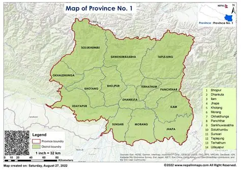

Map

After the promulgation of the Constitution of Nepal 2072 B.S., Koshi Province It is one of the seven provinces that were divided on September 19, 2015. This province was established with the objective of restructuring the country in the federal structure, it is the easternmost province of Nepal.
According to the report of the Constituency Delimitation Commission, there are 28 constituencies for the House of Representatives and 56 constituencies for the State Assemblies under the first-past-the-post electoral system. In a cabinet meeting held on 17 January 2018, Biratnagar was declared the temporary capital of the province. Biratnagar The meeting of the Province Assembly held on May 6, 2019 unanimously fixed the permanent capital of the province. The meeting of the Provincial Assembly held on March 30, 2022 passed the name 'Koshi Province' by a majority.
According to the 2011 census, about 4.5 million people live in the province at a population density of 175.6 per sq km. According to the 2011 census, the population of the province is 4,962,412 and the population den sity is 192 per square kilometre.